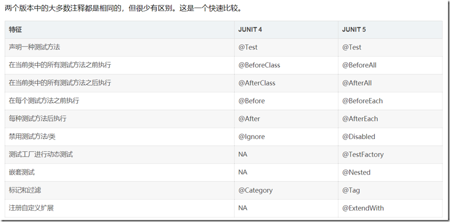

简介 MyBatis 是一款优秀的持久层框架，它支持自定义 SQL、存储过程以及高级映射。MyBatis 免除了几乎所有的 JDBC 代码以及设置参数和获取结果集的工作。MyBatis 可以通过简单的 XML 或注解来配置和映射原始类型、接口和 Java POJO（Plain Old Java Objects，普通老式 Java 对象）为数据库中的记录。
集成方式 新建SpringBoot 2.x项目
引入 在pom.xml中加入
1 2 3 4 5 6 7 8 9 10 11 12 13 14 15 16 17 18 19 20 21 22 23 24 25 26 27 28 29 <dependency> <groupId>org.springframework.boot</groupId> <artifactId>spring-boot-starter-web</artifactId> </dependency> <!-- https://mvnrepository.com/artifact/org.mybatis.spring.boot/mybatis-spring-boot-starter --> <dependency> <groupId>org.mybatis.spring.boot</groupId> <artifactId>mybatis-spring-boot-starter</artifactId> <version>2.1.3</version> </dependency> <dependency> <groupId>com.h2database</groupId> <artifactId>h2</artifactId> <scope>runtime</scope> </dependency> <dependency> <groupId>org.springframework.boot</groupId> <artifactId>spring-boot-starter-test</artifactId> <scope>test</scope> <exclusions> <exclusion> <groupId>org.junit.vintage</groupId> <artifactId>junit-vintage-engine</artifactId> </exclusion> </exclusions> </dependency>
为演示方便，这里使用H2来代替Mysql
配置 yml配置 application.yml中
1 2 3 4 5 6 7 8 9 10 11 12 13 spring: profiles: active: dev mybatis: type-aliases-package: com.jonesun.mybatis.entity mapper-locations: classpath*:mapper/**/*.xml configuration: # 打印sql日志 log-impl: org.apache.ibatis.logging.stdout.StdOutImpl # 开启驼峰命名 map-underscore-to-camel-case: true
application-dev.yml中
1 2 3 4 5 6 7 8 9 10 11 12 13 14 15 16 17 18 19 20 21 22 23 24 25 # 应用名称 spring: application: name: mybatis-normal-demo # h2配置(日常开发改为mysql配置即可) datasource: driver-class-name: org.h2.Driver schema: classpath:db/schema-h2.sql data: classpath:db/data-h2.sql url: jdbc:h2:mem:test username: root password: test h2: console: enabled: true path: /console # 日志输出级别 logging: level: com: jonesun: mybatis: dao: debug
常用配置说明
application-dev.yml：开发环境
application-test.yml：测试环境
application-prod.yml：生产环境
初始化数据库：db/schema-h2.sql
1 2 3 4 5 6 7 8 9 10 11 DROP TABLE IF EXISTS users; CREATE TABLE users ( id BIGINT(20) NOT NULL AUTO_INCREMENT COMMENT '主键ID', name VARCHAR(30) NULL DEFAULT NULL COMMENT '姓名', age INT(11) NULL DEFAULT NULL COMMENT '年龄', email VARCHAR(50) NULL DEFAULT NULL COMMENT '邮箱', create_time DATETIME NULL DEFAULT NULL COMMENT '创建日期', PRIMARY KEY (id) );
初始化表数据: db/data-h2.sql
1 2 3 4 5 6 7 8 DELETE FROM users; INSERT INTO users (id, `name`, age, email, create_time) VALUES (1, 'Jone', 18, 'jone@163.com', '2020-02-09 08:20:00'), (2, 'Jack', 20, 'jack@163.com', '2020-02-10 11:00:00'), (3, 'Tom', 28, 'tom@163.com', '2020-03-11 06:10:00'), (4, 'Sandy', 21, 'sandy@163.com', '2020-04-12 05:30:00'), (5, 'Billie', 24, 'billie@163.com', '2020-05-13 03:40:00');
使用 编写mapper 实体类
1 2 3 4 5 6 7 8 9 10 11 12 package com.jonesun.mybatis.entity; public class User implements Serializable { private Long id; private String name; private Integer age; private String email; private LocalDateTime createTime; //省略getter、setter }
dao
1 2 3 4 5 6 7 8 9 10 11 12 13 14 15 16 package com.jonesun.mybatis.dao; public interface UserDao { int insert(User user); int deleteById(Serializable id); int updateById(User user); User selectById(Serializable id); List<User> selectList(); }
mapper.xml
resources\mapper\user\UserMapper.xml
1 2 3 4 5 6 7 8 9 10 11 12 13 14 15 16 17 18 19 20 21 22 23 24 25 26 27 28 29 30 31 32 33 34 35 36 37 38 39 40 41 42 43 44 45 46 47 48 49 50 51 52 53 54 <?xml version="1.0" encoding="UTF-8"?> <!DOCTYPE mapper PUBLIC "-//mybatis.org//DTD Mapper 3.0//EN" "http://mybatis.org/dtd/mybatis-3-mapper.dtd"> <mapper namespace="com.jonesun.mybatis.dao.UserDao"> <sql id="BASE_TABLE"> users </sql> <sql id="BASE_COLUMN"> id, name, age, email, create_time </sql> <insert id="insert" useGeneratedKeys="true" keyProperty="id"> insert into <include refid="BASE_TABLE"/> (name, age, email, create_time) values (#{name}, #{age}, #{email}, now()) </insert> <delete id="deleteById"> delete from <include refid="BASE_TABLE"/> where id = #{id} </delete> <update id="updateById"> update <include refid="BASE_TABLE"/> set name = #{name}, age = #{age}, email = #{email} where id = #{id} </update> <select id="selectById" resultType="com.jonesun.mybatis.entity.User"> SELECT <include refid="BASE_COLUMN"/> FROM <include refid="BASE_TABLE"/> WHERE id = #{id} </select> <select id="selectList" resultType="com.jonesun.mybatis.entity.User"> SELECT <include refid="BASE_COLUMN"/> FROM <include refid="BASE_TABLE"/> </select> </mapper>
编写测试类
springboot2.x的版本, 默认使用的是junit5版本, junit4和junit5两个版本差别比较大，需要注意下用法

1 2 3 4 5 6 7 8 9 10 11 12 13 14 15 16 17 18 19 20 21 22 23 24 25 26 27 28 29 30 31 32 33 34 35 36 37 38 39 40 41 42 43 44 45 46 47 48 49 50 51 52 53 54 55 56 57 58 59 60 package com.jonesun.mybatis.dao; import com.jonesun.mybatis.entity.User; import org.junit.jupiter.api.Test; import org.slf4j.Logger; import org.slf4j.LoggerFactory; import org.springframework.boot.test.context.SpringBootTest; import javax.annotation.Resource; import java.util.List; import static org.junit.jupiter.api.Assertions.*; @SpringBootTest class UserDaoTest { private final Logger log = LoggerFactory.getLogger(this.getClass()); @Resource UserDao userDao; @Test // @Transactional void insert() { User user = new User("Jone Sun", 30, "sunjoner7@gmail.com"); int result = userDao.insert(user); assertNotNull(user.getId(), "用户插入失败"); assertTrue(result > 0, "用户插入失败"); log.debug(user.toString()); } @Test void deleteById() { int result = userDao.deleteById(5); assertTrue(result > 0, "用户删除失败"); } @Test void selectById() { User user = userDao.selectById(1); assertEquals(user.getName(), "Jone", "用户名错误"); log.debug(user.toString()); } @Test void updateById() { User user = userDao.selectById(1); user.setAge(21); int result = userDao.updateById(user); assertTrue(result > 0, "用户更新失败"); log.debug(user.toString()); } @Test void selectList() { List<User> list = userDao.selectList(); assertFalse(list.isEmpty(), "列表为空"); log.debug(list.toString()); } }
常用动态SQL标签 if 只有判断条件为true才会执行其中的SQL语句
1 2 3 4 5 6 7 8 9 10 <update id="update" parameterType="com.jonesun.springredis.entity.User"> UPDATE users SET <if test="username != null">username = #{username},</if> <if test="password != null">password = #{password},</if> nick_name = #{nickName} WHERE id = #{id} </update>
当if中出现多个判断条件时, 使用and:
1 2 3 4 5 6 7 8 9 10 <update id="update" parameterType="com.jonesun.springredis.entity.User"> UPDATE users SET <if test="username != null">username = #{username},</if> <if test="password != null and password !=''">password = #{password},</if> nick_name = #{nickName} WHERE id = #{id} </update>
XML中对大于＞、＜这种特殊字符串需要做转义处理:
1 2 3 4 5 6 7 8 <if test='id != null and id gt 28'></if> 大于：> 小于：< 大于等于：>= 小于等于：<= sql中也可以使用 <![CDATA[ >= ]]>
choose、when、otherwise 有时候，我们不想使用所有的条件，而只是想从多个条件中选择一个使用。针对这种情况，MyBatis 提供了 choose 元素，它有点像 Java 中的 switch 语句，choose 为 switch，when 为 case，otherwise 则为default:
1 2 3 4 5 6 7 8 9 10 11 12 13 14 15 16 17 <select id="list" resultMap="defaultDetailMap"> select users.* from users where <choose> <when test="sex == '男'"> users.sex=0 </when> <when test="sex == '女'"> users.sex=1 </when> <otherwise> users.sex IS NOT NULL </otherwise> </choose> </select>
where where 元素只会在子元素返回任何内容的情况下才插入 WHERE 子句。而且，若子句的开头为 AND 或 OR，where 元素也会将它们去除:
当遇到如下场景，status恰好为空时，则会报错(where后面没有条件了):
1 2 3 4 5 6 7 8 9 10 11 12 13 <select id="findActiveBlogLike" resultType="Blog"> SELECT * FROM BLOG WHERE <if test="state != null"> state = #{state} </if> <if test="title != null"> AND title like #{title} </if> <if test="author != null and author.name != null"> AND author_name like #{author.name} </if> </select>
此时使用可解决：
1 2 3 4 5 6 7 8 9 10 11 12 13 14 <select id="findActiveBlogLike" resultType="Blog"> SELECT * FROM BLOG <where> <if test="state != null"> state = #{state} </if> <if test="title != null"> AND title like #{title} </if> <if test="author != null and author.name != null"> AND author_name like #{author.name} </if> </where> </select>
set 使用 set 标签可以将动态的配置 set 关键字，和剔除追加到条件末尾的任何不相关的逗号
当遇到如下场景，hobby恰好为空时，则会报错(最后会多一个,):
1 2 3 4 5 6 7 8 9 10 11 <update id="updateStudent" parameterType="Object"> UPDATE STUDENT <set> <if test="name!=null and name!='' "> NAME = #{name}, </if> <if test="hobby!=null and hobby!='' "> MAJOR = #{major}, </if> <if test="hobby!=null and hobby!='' "> HOBBY = #{hobby} </if> </set> WHERE ID = #{id}; </update>
此时使用可解决：
1 2 3 4 5 6 7 8 9 10 11 <update id="updateStudent" parameterType="Object"> UPDATE STUDENT <set> <if test="name!=null and name!='' "> NAME = #{name}, </if> <if test="hobby!=null and hobby!='' "> MAJOR = #{major}, </if> <if test="hobby!=null and hobby!='' "> HOBBY = #{hobby} </if> </set> WHERE ID = #{id}; </update>
foreach foreach是用来对集合的遍历，这个和Java中的功能很类似。通常处理SQL中的in语句
你可以将任何可迭代对象（如 List、Set 等）、Map 对象或者数组对象作为集合参数传递给 foreach。当使用可迭代对象或者数组时，index 是当前迭代的序号，item 的值是本次迭代获取到的元素。当使用 Map 对象（或者 Map.Entry 对象的集合）时，index 是键，item 是值：
1 2 3 4 5 6 7 8 9 10 11 12 13 14 15 16 17 <select id="list" resultMap="defaultDetailMap"> select users.* from users where <choose> <when test="statusList != null"> users.status IN <foreach item="item" index="index" collection="statusList" open="(" separator="," close=")"> #{item} </foreach> </when> <otherwise> users.status IS NOT NULL </otherwise> </choose> </select>
sql 在实际开发中会遇到许多相同的SQL，比如根据某个条件筛选，这个筛选很多地方都能用到，我们可以将其抽取出来成为一个公用的部分，这样修改也方便，一旦出现了错误，只需要改这一处便能处处生效了，此时就用到了这个标签了
当多种类型的查询语句的查询字段或者查询条件相同时，可以将其定义为常量，方便调用。为求 结构清晰也可将 sql 语句分解
1 2 3 4 5 6 7 8 9 10 11 12 13 14 15 16 17 18 19 20 <!-- 查询字段 --> <sql id="Base_Column_List"> id,birthday,name,status</sql> <!-- 查询条件 --> <sql id="Example_Where_Clause"> where 1=1 <trim suffixOverrides=","> <if test="id != null and id !=''"> and id = #{id} </if> <if test="birthday != null "> and birthday = #{birthday} </if> <if test="name != null and name != ''"> and NAME = #{name} </if> <if test="status != null and status != ''"> and status = #{status} </if> </trim> </sql>
include include用于引用sql标签定义的常量。比如引用上面sql标签定义的常量，如下:
1 2 3 4 <select id="selectAll" resultMap="BaseResultMap"> SELECT <include refid="Base_Column_List" /> FROM student <include refid="Example_Where_Clause" /> </select>
如果遇到resultMap或者片段已经在另外一个xxxMapper.xml中已经定义过了，此时当前的xml还需要用到，Mybatis中也是支持引用其他Mapper文件中的SQL片段的(类似于Java中的全类名):
1 <include refid="com.xxx.dao.xxMapper.Base_Column_List"></include>
标签中的resultMap同样可以这么引用
当遇到表字段冲突时，如users表和user_detail表都有status时，可在字段前加上表名:
ID,MAJOR,BIRTHDAY,AGE,NAME,HOBBY,users.status
常量定义 开过阿里巴巴开发手册的大概都知道代码中是不允许出现魔数的，何为魔数？简单的说就是一个数字，一个只有你知道，别人不知道这个代表什么意思的数字。通常我们在Java代码中都会定义一个常量类专门定义这些数字。在Mybatis中同样可以使用(@+全类名+@+常量)：
1 2 3 4 <if test="type!=null and type==@com.xxx.core.Constants.CommonConstants@DOC_TYPE"> -- ....获取医生的权限</if> <if test="type!=null and type==@com.xxx.core.Constants.CommonConstants@NUR_TYPE"> -- ....获取护士的权限</if>
除了调用常量类中的常量，还可以类中的方法
通过selectKey获取自定义列 假如有些数据库不支持自增主键，或者说我们想插入自定义的主键，而又不想在业务代码中编写逻辑，那么就可以通过MyBatis的selectKey来获取：
1 2 3 4 5 6 <insert id="insert2" useGeneratedKeys="true" keyProperty="address"> <selectKey keyProperty="address" resultType="String" order="BEFORE"> select uuid() from lw_user_address </selectKey> insert into lw_user_address (address) values (#{address}) </insert>
selectKey中的order属性有2个选择：BEFORE和AFTER。
BEFORE：表示先执行selectKey的语句，然后将查询到的值设置到JavaBean对应属性上，然后再执行insert语句。
AFTER：表示先执行AFTER语句，然后再执行selectKey语句，并将selectKey得到的值设置到JavaBean中的属性。上面示例中如果改成AFTER，那么插入的address就会是空值，但是返回的JavaBean属性内会有值
selectKey中返回的值只能有一条数据，如果满足条件的数据有多条会报错，所以一般都是用于生成主键，确保唯一，或者在selectKey后面的语句加上条件，确保唯一
cache Mybatis提供了一级缓存和二级缓存的支持
一级缓存
spring整合mybatis后，非事务环境下，每次操作数据库都使用新的sqlSession对象。因此mybatis的一级缓存无法使用（一级缓存针对同一个sqlsession有效）,当然可以使用同一个sqlSession来使用一级缓存
*在开启事物的情况之下，spring使用threadLocal获取当前资源绑定同一个sqlSession，因此此时一级缓存是有效的
1 2 3 4 5 6 7 8 9 10 11 12 13 @Test @Transactional void cacheTest() { List<User> list1 = userDao.selectList(); assertFalse(list1.isEmpty(), "列表为空"); log.debug(list1.toString()); List<User> list2 = userDao.selectList(); assertFalse(list2.isEmpty(), "列表为空"); log.debug(list2.toString()); } //这样就只会访问一次数据库
二级缓存
在同一个namespace下的mapper文件中，执行相同的查询SQL，第一次会去查询数据库，并写到缓存中；第二次直接从缓存中取。当执行SQL时两次查询中间发生了增删改操作，则二级缓存清空
Mybatis 的二级缓存需要手动开启才能启动，与一级缓存的最大区别就在于二级缓存的作用范围比一级缓存大，二级缓存是多个 sqlSession 可以共享一个 Mapper 的二级缓存区域，二级缓存作用的范围是 Mapper 中的同一个命名空间（namespace）的 statement 。在配置文件默认开启了二级缓存的情况下，如果每一个 namespace 都开启了二级缓存，则都对应有一个二级缓存区，同一个 namespace 共用一个二级缓存区
1 2 3 4 5 6 7 8 <mapper namespace="cn.jonesun.mybatis.mapper.UserMapper"> <!-- 开启本mapper的namespace下的二级缓存 type：指定cache接口的实现类的类型，mybatis默认使用PerpetualCache 要和ehcache整合，需要配置type为ehcache实现cache接口的类型--> <cache /> </mapper>
参数名
说明
type
指定缓存（cache）接口的实现类型，当需要和ehcache整合时更改该参数值即可。
flushInterval
刷新间隔。可被设置为任意的正整数，单位毫秒。默认不设置。
size
引用数目。可被设置为任意正整数，缓存的对象数目等于运行环境的可用内存资源数目。默认是1024。
readOnly
只读，true或false。只读的缓存会给所有的调用者返回缓存对象的相同实例。默认是false。
eviction
缓存收回策略。LRU（最近最少使用的），FIFO（先进先出），SOFT（ 软引用），WEAK（ 弱引用）。默认是 LRU。
在 Mapper 中加入cache便签后，可以在select中可设置useCache=”false”来禁用缓存；在insert、update、delete中设置flushCache=”false”来取消清空/刷新缓存，默认是会清空缓存
注意要点
通常我们会为每个单表创建单独的映射文件，由于MyBatis的二级缓存是基于namespace的，多表查询语句所在的namspace无法感应到其他namespace中的语句对多表查询中涉及的表进行的修改，引发脏数据问题
为了避免这个问题，在多个mapper.xml中如果要一起使用二级缓存，可以使用cache-ref引用别的命名空间的Cache配置，两个命名空间的操作使用的是同一个Cache，这样两个映射文件对应的Sql操作都使用的是同一块缓存了:
1 <cache-ref namespace="mapper.StudentMapper"/>
不过需要注意的是，缓存的粒度就变粗了，多个Mapper namespace下的所有操作都会对缓存使用造成影响
实际应用
二级缓存一般应用在对于访问多的查询请求且对查询结果的实时性要求不高的，此时可采用 Mybatis 二级缓存技术降低数据库访问量，提高访问速度。例如：耗时比较高的统计分析的sql
pagehelper 可结合pagehelper 实现分页
1 2 3 4 5 <dependency> <groupId>com.github.pagehelper</groupId> <artifactId>pagehelper-spring-boot-starter</artifactId> <version>1.3.0</version> </dependency>
1 2 3 4 5 6 7 8 9 10 11 12 13 14 15 16 17 18 19 20 21 22 23 24 25 26 27 28 29 30 31 32 33 34 35 36 public interface UserService { PageInfo<User> getAllUsersForPage(int pageNo, int pageSize); } @Service public class UserServiceImpl implements UserService { @Autowired UserDao userDao; @Override public PageInfo<User> getAllUsersForPage(int pageNo, int pageSize) { PageHelper.startPage(pageNo,pageSize); List<User> list = userDao.selectList(); PageInfo<User> pageInfo = new PageInfo<>(list); return pageInfo; } } @SpringBootTest class UserServiceTest { private final Logger log = LoggerFactory.getLogger(this.getClass()); @Autowired private UserService userService; @Test void getAllUsersForPage() { PageInfo<User> pageInfo = userService.getAllUsersForPage(1, 10); assertFalse(pageInfo.getList().isEmpty(), "列表为空"); log.debug(pageInfo.toString()); } }
mysql 实际项目中会使用mysql与mybatis进行搭配
1 2 3 4 5 6 <!-- https://mvnrepository.com/artifact/mysql/mysql-connector-java --> <dependency> <groupId>mysql</groupId> <artifactId>mysql-connector-java</artifactId> <version>8.0.21</version> </dependency>
1 2 3 4 5 6 spring: datasource: url: jdbc:mysql://localhost:3306/xxx?serverTimezone=UTC&useUnicode=true&characterEncoding=utf8&useSSL=true username: root password: xxx driver-class-name: com.mysql.cj.jdbc.Driver
有两点需要注意:
mysql-connector包使用了新的驱动: com.mysql.jdbc.Driver被弃用了,应为com.mysql.cj.jdbc.Driver
连接的URL中需要增加时区信息: serverTimezone=UTC或者serverTimezone=GMT+8
数据库连接池
Hikari
SpringBoot 默认数据库连接池是Hikari,可以根据项目需要自定义配置:
1 2 3 4 5 6 7 8 9 10 11 12 13 14 15 16 17 18 19 20 21 22 datasource: url: jdbc:mysql://localhost:3306/xxx?serverTimezone=UTC&useUnicode=true&characterEncoding=utf8&useSSL=true username: root password: xxx driver-class-name: com.mysql.cj.jdbc.Driver # # SpringBoot 默认数据库连接池Hikari will use the above plus the following to setup connection pooling # type: com.zaxxer.hikari.HikariDataSource hikari: ## 最小空闲连接数量 minimum-idle: 5 ## 连接池最大连接数，默认是10 maximum-pool-size: 15 ## 此属性控制从池返回的连接的默认自动提交行为,默认值：true auto-commit: true ## 空闲连接存活最大时间，默认600000（10分钟）,时间单位都是毫秒 idle-timeout: 30000 ## 连接池名称 pool-name: DatebookHikariCP ## 此属性控制池中连接的最长生命周期，值0表示无限生命周期，默认1800000即30分钟 max-lifetime: 1800000 ## 数据库连接超时时间,默认30秒，即30000 connection-timeout: 30000
大多数线上应用可以使用如下的Hikari配置:
1 2 3 4 5 maximumPoolSize: 20 minimumIdle: 10 connectionTimeout: 30000 idleTimeout: 600000 maxLifetime: 1800000
druid
如果需要可以改用阿里巴巴的druid
1 2 3 4 5 6 <!-- https://mvnrepository.com/artifact/com.alibaba/druid-spring-boot-starter --> <dependency> <groupId>com.alibaba</groupId> <artifactId>druid-spring-boot-starter</artifactId> <version>1.1.23</version> </dependency>
对应application-xx.yml中加入配置
1 2 3 4 5 6 7 8 9 10 11 12 13 14 15 16 17 18 19 20 21 22 23 24 25 26 27 28 29 30 31 32 33 34 35 36 37 38 39 40 41 42 43 44 45 46 47 48 49 50 51 52 53 54 55 56 57 58 59 60 61 62 datasource: url: jdbc:mysql://localhost:3306/xxx?serverTimezone=UTC&useUnicode=true&characterEncoding=utf8&useSSL=true username: root password: xxx driver-class-name: com.mysql.cj.jdbc.Driver # 使用druid连接池 type: com.alibaba.druid.pool.DruidDataSource druid: # #当数据库抛出不可恢复的异常时,抛弃该连接 # init-exception-throw: true # exception-sorter: true #初始化时建立物理连接的个数 initial-size: 5 #最大连接池数量 maxIdle已经不再使用 max-active: 20 #是否缓存preparedStatement,mysql5.5+建议开启 pool-prepared-statements: true #当值大于0时poolPreparedStatements会自动修改为true max-pool-prepared-statement-per-connection-size: 20 #获取连接时最大等待时间，单位毫秒 max-wait: 30000 #销毁线程时检测当前连接的最后活动时间和当前时间差大于该值时，关闭当前连接 min-evictable-idle-time-millis: 30000 #最小连接池数量 min-idle: 5 #申请连接时会执行validationQuery检测连接是否有效,开启会降低性能,默认为true test-on-borrow: false #归还连接时会执行validationQuery检测连接是否有效,开启会降低性能,默认为true test-on-return: false #申请连接的时候检测，如果空闲时间大于timeBetweenEvictionRunsMillis，执行validationQuery检测连接是否有效 test-while-idle: true #既作为检测的间隔时间又作为testWhileIdel执行的依据 time-between-eviction-runs-millis: 60000 #用来检测连接是否有效的sql 必须是一个查询语句 #mysql中为 select 'x' #oracle中为 select 1 from dual validation-query: select 'x' # 配置监控统计拦截的filters，去掉后监控界面sql无法统计，StatFilter,用于统计监控信息'wall'用于防火墙 filters: stat,wall,slf4j #通过connectProperties属性来打开mergeSql功能；慢SQL记录 connection-properties: druid.stat.mergeSql=true;druid.stat.slowSqlMillis=500 #合并多个DruidDataSource的监控数据 use-global-data-source-stat: true # 配置DruidStatFilter web-stat-filter: enabled: true url-pattern: "/*" exclusions: "*.js,*.gif,*.jpg,*.bmp,*.png,*.css,*.ico,/druid/*" #设置访问druid监控页的账号和密码,默认没有 stat-view-servlet: enabled: true url-pattern: "/druid/*" # IP白名单(没有配置或者为空，则允许所有访问) # allow: localhost,127.0.0.1,192.168.* # IP黑名单 (存在共同时，deny优先于allow) #deny: 192.168.1.100 # 禁用HTML页面上的“Reset All”功能 reset-enable: false login-username: admin login-password: admin123
阿里巴巴的druid带了一个监控sql相关的页面，访问项目地址+/druid/即可查看(登录用户名密码在yml中设置的login-username和login-password)
关于druid和Hikari有个比较有意思的讨论
MyBatis-Plus 可结合mybatis-plus生成基础sql，感兴趣可以了解下，个人不是很推荐代码生成相关(除非确实都是简单的CURD)
使用默认的MyBatis，如果需要添加新的表对应dao层的话，一般需要编写mapper和dao方法(这点就不如JPA来的方便)，可以使用MyBatis-Plus 来简化开发，生成基础的sql
引入 MyBatis-Plus 之后请不要再次引入 MyBatis 以及 MyBatis-Spring，以避免因版本差异导致的问题。
去除原有mybatis相关依赖，加入:
1 2 3 4 5 6 7 8 9 10 11 12 13 14 15 16 17 18 <!-- <dependency>--> <!-- <groupId>org.mybatis.spring.boot</groupId>--> <!-- <artifactId>mybatis-spring-boot-starter</artifactId>--> <!-- <version>2.1.3</version>--> <!-- </dependency>--> <!-- <dependency>--> <!-- <groupId>com.github.pagehelper</groupId>--> <!-- <artifactId>pagehelper-spring-boot-starter</artifactId>--> <!-- <version>1.3.0</version>--> <!-- </dependency>--> <dependency> <groupId>com.baomidou</groupId> <artifactId>mybatis-plus</artifactId> <version>3.4.0</version> </dependency>
注意因为pagehelper-spring-boot-starter默认会引用mybatis，所以要不直接去除(MyBatis-Plus有自己的分页功能), 要不就将pagehelper-spring-boot-starter的mybatis引用排除掉
推荐idea插件
free-idea-mybatis是一款增强idea对mybatis支持的插件，主要功能如下：
生成mapper xml文件
快速从代码跳转到mapper及从mapper返回代码
mybatis自动补全及语法错误提示
集成mybatis generator gui界面
这个插件同样可以生成mapper.xml相关文件
多数据源 如果是主从复制- -读写分离：比如test01中负责增删改，test02中负责查询。但是需要注意的是负责增删改的数据库必须是主库（master）
sharding-jdbc
1 2 3 4 5 6 <dependency> <groupId>io.shardingsphere</groupId> <artifactId>sharding-jdbc-spring-boot-starter</artifactId> <version>3.0.0</version> </dependency>
mysql主从复制
Mybatis分层结构
mysql inndb默认可重复读级别，不会出现幻读。
mybatis架构自下而上分为基础支撑层、数据处理层、API接口层这三层。
基础支撑层，主要是用来做连接管理、事务管理、配置加载、缓存管理等最基础组件，为上层提供最基础的支撑。
数据处理层，主要是用来做参数映射、sql解析、sql执行、结果映射等处理，可以理解为请求到达，完成一次数据库操作的流程。
API接口层，主要对外提供API，提供诸如数据的增删改查、获取配置等接口。